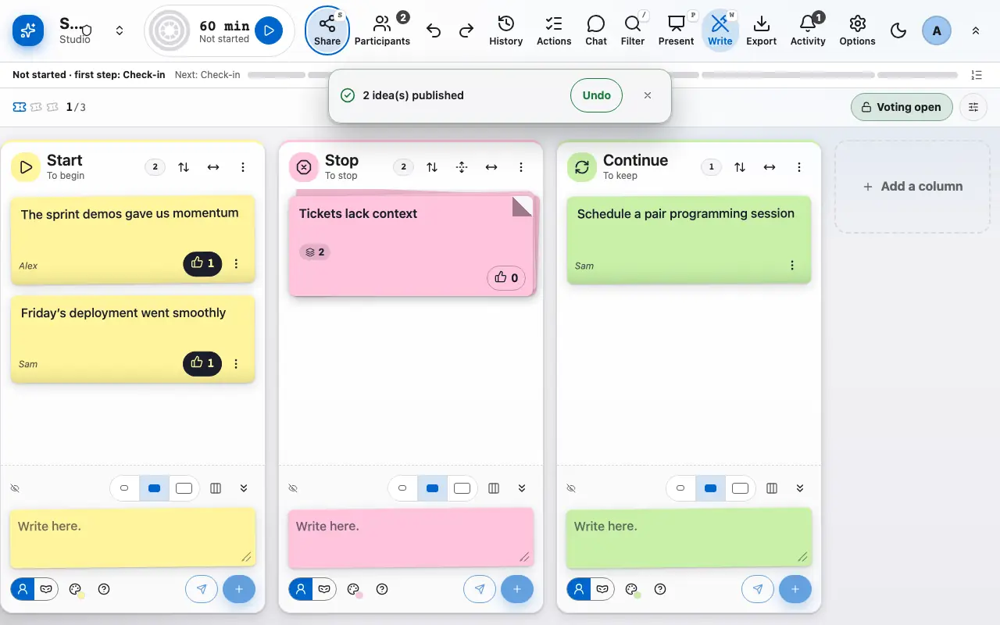
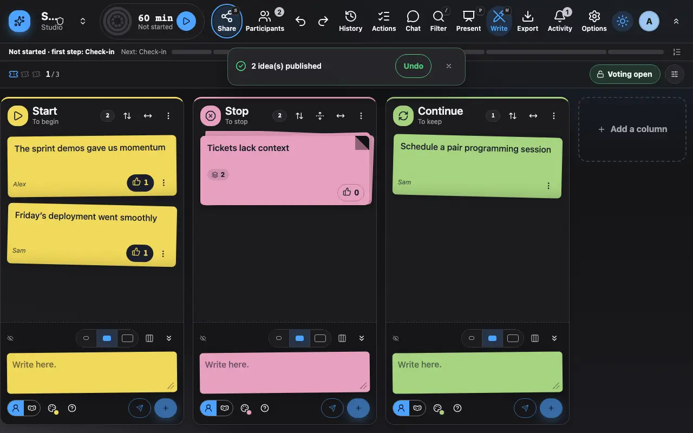

Write and publish ideas
Ideas stay private until you publish them.
1 Each column has its own field at the top, drafts stay on your device.
Each column has its own field, at the very top under its title, labelled "Only you see this until you publish". Enter keeps the idea as a private draft on your device: it joins your tray under the field as a tilted note with a "Draft" ribbon that nobody else sees. The counter in the toolbar says how many drafts are waiting, and "Publish all" sends them at once; Ctrl+Enter publishes straight away. Publish when you are ready: the idea appears for every participant.
On a phone, a "Write an idea" button opens the field in a sheet at the bottom of the screen: one chip per column says where the idea goes (the column in view by default), and the tray of drafts stays in the column. You can group similar ideas by dragging one onto another (on a touch screen, press and hold the idea until it lifts, then drag it; the idea's menu also has "Group with..."), and vote with the thumb.
A banner lets you undo a publication made by mistake for a few seconds.
A long idea shows its first lines and a "Read more" link that opens the rest (and "Show less" folds it back); the text is never smaller than 14 px. Notes of different heights pack into the column without holes, and the column scrolls. To fit more or fewer notes on your screen, press d to change the density (comfortable, compact, dense) and +, - and 0 to zoom the notes in, out and back to 100%. Both are personal, remembered on this device for each kind of screen, and also in the profile (advanced mode).
Notes move with restraint: the corner of a note peels when the mouse rests on it, your published idea flies to its place and sticks, an idea from someone else flutters in, and a group snaps into place when a note joins it. Each lasts under 0.4 second, none moves a note you are editing, and all of them stop with the "Reduced" motion setting or the system's reduced-motion preference.

